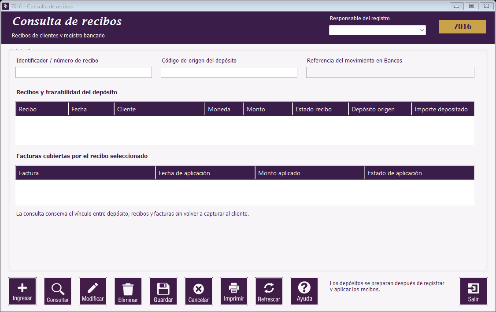

|   |
| |
Guía de Movimientos de clientes | Estado de cuenta | Cargos y ajustes | Recepción de pagos | Depósitos a Bancos | Consulta de recibos | Botones de Movimientos de clientes | Mensajes frecuentes de Movimientos de clientes

Ubicación de los campos y del botón Ayuda en el formulario.
El depósito conserva la relación con sus recibos y estos con las facturas. Consultar no vuelve a registrar el pago ni lo marca como depositado.